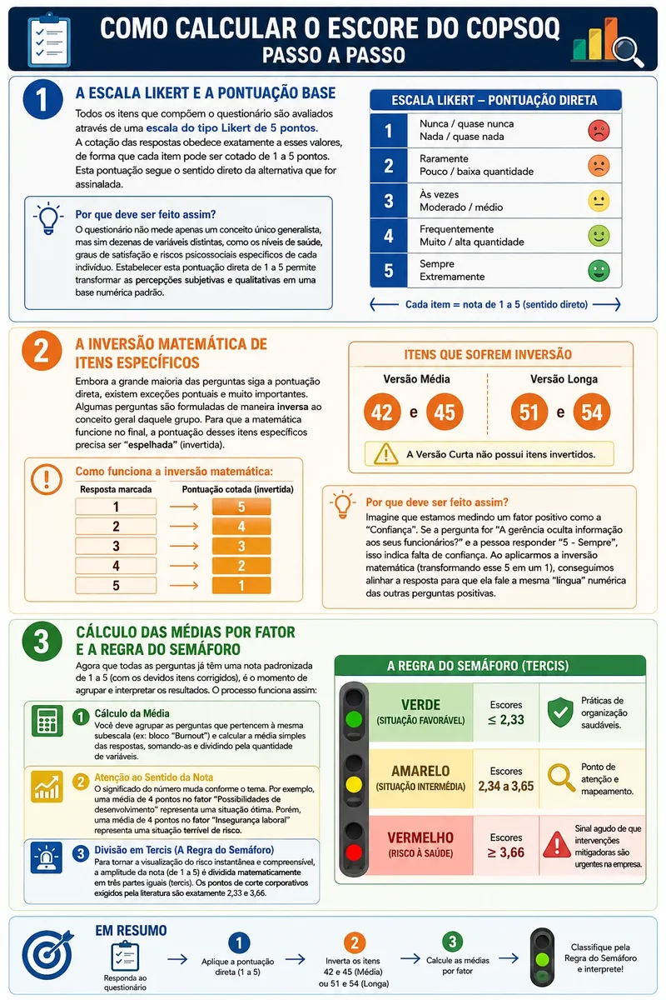

O Copenhagen Psychosocial Questionnaire (COPSOQ) é um instrumento científico reconhecido mundialmente, fundamental para a avaliação da organização do trabalho e a gestão de riscos psicossociais. Ele afere a percepção dos trabalhadores sobre suas rotinas, exigências cognitivas e emocionais, relação com a chefia e possíveis sintomas de estresse e esgotamento.
A Importância do COPSOQ e a Nova NR-1
No Brasil, a saúde mental corporativa deixou de ser opcional. Com a entrada em vigor este mês da atualização da Norma Regulamentadora NR-1, as organizações passaram a ter o dever de mapear e mitigar ameaças que afetam o bem-estar mental dos colaboradores.
Neste cenário, o COPSOQ desponta como a ferramenta clínica padrão-ouro adotada pelo mundo corporativo e por equipes de Saúde Ocupacional (PGR/PCMSO) para a estrita implementação e adequação à NR-1. Utilizar este questionário permite que a empresa faça uma avaliação legal, documentada e fidedigna das métricas exigidas pelo novo texto da NR-1.
As 3 Versões do Questionário e Suas Diferenças
O COPSOQ (atualmente em sua segunda e terceira iterações clínicas) foi estruturado de maneira versátil para se adaptar a diferentes necessidades. Ele possui três versões principais:
- Versão Curta (41 Perguntas): Destinada a autoavaliações rápidas, rastreios em pequenos locais de trabalho e check-ups periódicos. Mede o panorama geral de estresse de forma ágil e objetiva.
- Versão Média (76 Perguntas): O padrão para uso de profissionais de saúde ocupacional. Avalia detalhadamente os riscos, auxiliando na planificação e nas auditorias de empresas.
- Versão Longa (119 a 148 Perguntas): A ferramenta mais exaustiva, desenhada majoritariamente para fins de pesquisa científica rigorosa, mapeamento profundo de liderança e diagnóstico de burnout clínico.
E o que mudou na transição do COPSOQ II para o COPSOQ III?
A matemática e a espinha dorsal mantiveram-se as mesmas, mas o COPSOQ III foi modernizado para os desafios da década atual. Foram incluídos novos fatores psicossociais importantíssimos, como a avaliação do Cyber Bullying, Tarefas Ilegítimas, insegurança das condições de trabalho e métricas de engajamento organizacional.
Passo a Passo: Como Calcular o Escore do COPSOQ
Para que o questionário não seja apenas um "amontoado de opiniões", a ferramenta converte emoções em dados quantitativos. Aprenda abaixo como extrair os resultados e entender a "regra do semáforo" de forma extremamente didática:
1 A Escala Likert e a Pontuação Base
Todos os itens que compõem o questionário são avaliados através de uma escala do tipo Likert de 5 pontos. A cotação das respostas obedece exatamente a esses valores, de forma que cada item pode ser cotado de 1 a 5 pontos. Esta pontuação segue o sentido direto da alternativa que for assinalada. A título de exemplo, as respostas variam desde "1 - Nunca/quase nunca" até "5 - Sempre", ou desde "1 - Nada/quase nada" até "5 - Extremamente".
Por que deve ser feito assim? O questionário não mede apenas um conceito único generalista, mas sim dezenas de variáveis distintas, como os níveis de saúde, graus de satisfação e riscos psicossociais específicos de cada indivíduo. Estabelecer esta pontuação direta de 1 a 5 permite transformar as percepções subjetivas e qualitativas em uma base numérica padrão.
2 A Inversão Matemática de Itens Específicos
Embora a grande maioria das perguntas siga a pontuação direta que vimos no Passo 1, existem exceções pontuais e muito importantes. Algumas perguntas são formuladas de maneira inversa ao conceito geral daquele grupo. Para que a matemática funcione no final, a pontuação desses itens específicos precisa ser "espelhada" (invertida).
Como funciona a inversão matemática:
• Se a pessoa marcou 1, a pontuação cotada será 5.
• Se a pessoa marcou 2, a pontuação cotada será 4.
• Se a pessoa marcou 3, a pontuação cotada continua 3.
• Se a pessoa marcou 4, a pontuação cotada será 2.
• Se a pessoa marcou 5, a pontuação cotada será 1.
De acordo com o manual COPSOQ II, na Versão Média, os únicos itens que sofrem essa inversão são o 42 e o 45. (Na Versão Longa, eles correspondem aos itens 51 e 54. A Versão Curta não possui itens invertidos).
Por que deve ser feito assim? Imagine que estamos medindo um fator positivo como a "Confiança". Se a pergunta for "A gerência oculta informação aos seus funcionários?" e a pessoa responder "5 - Sempre", isso indica falta de confiança. Ao aplicarmos a inversão matemática (transformando esse 5 em um 1), conseguimos alinhar a resposta para que ela fale a mesma "língua" numérica das outras perguntas positivas.
3 Cálculo das Médias por Fator e a Regra do Semáforo
Agora que todas as perguntas já têm uma nota padronizada de 1 a 5 (com os devidos itens corrigidos), é o momento de agrupar e interpretar os resultados. O processo funciona assim:
Cálculo da Média: Você deve agrupar as perguntas que pertencem à mesma subescala (ex: bloco "Burnout") e calcular a média simples das respostas, somando-as e dividindo pela quantidade de variáveis.
Atenção ao Sentido da Nota: O significado do número muda conforme o tema. Por exemplo, uma média de 4 pontos no fator "Possibilidades de desenvolvimento" representa uma situação ótima. Porém, uma média de 4 pontos no fator "Insegurança laboral" representa uma situação terrível de risco.
A Divisão em Tercis (A Regra do Semáforo): Para tornar a visualização do risco instantânea e compreensível, a amplitude da nota (de 1 a 5) é dividida matematicamente em três partes iguais (tercis). Os pontos de corte corporativos exigidos pela literatura são exatamente 2,33 e 3,66.
- VERDE (Situação Favorável): Escores menores ou iguais a 2,33. Práticas de organização saudáveis.
- AMARELO (Situação Intermédia): Escores entre 2,34 e 3,65. Ponto de atenção e mapeamento.
- VERMELHO (Risco à Saúde): Escores iguais ou acima de 3,66. Sinal agudo de que intervenções mitigadoras são urgentes na empresa.

Acelere sua Adequação Ocupacional (NR-1)
Calcular todas as dezenas de perguntas manualmente e realizar a inversão matemática de notas pode gerar erros gravíssimos nos relatórios da sua empresa. Para resolver isso, desenvolvemos as calculadoras semi-automatizadas do COPSOQ no nosso site.
Acesse, responda e clique em "Calcular" para que nosso sistema aplique toda a métrica do semáforo instantaneamente. E o melhor: você pode gerar o documento PDF do laudo em formato A4 perfeitamente enquadrado para salvar e anexar aos prontuários corporativos!